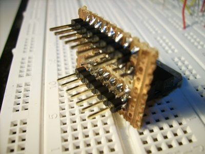

Zurück zum Menü 1 1.2.9
Motortreiber L298
Erstellt: ab Frühjahr 2005 |
Viele Leser werden nicht gerade von den Polwendeschaltungen mit Relais begeistert sein. Vielleicht wollt Ihr ja den Gleichstrommotor mit TTL-Signalen steuern und habt dann Probleme, umständlich die Relais ansteuern zu müssen. Zwar ginge das auch noch recht einfach, aber die Schaltung wird dann doch ein wenig groß. Deshalb erkläre ich hier nun, wie man bis zu 2 Gleichstrommotoren mit einem L 298 ansteuern kann. Zunächst wollen wir einmal schauen, wie man überhaupt einen Motor in beide Richtungen laufen lassen und ihn auch stoppen kann. Dazu schauen wir uns einmal die folgende Grafik an: Wir erkennen leicht, dass man den Motor mit den Schaltern S1 und S4 vorwärts laufen lassen kann und mit den Schaltern S3 und S2 rückwärts. Wenn nun aber der Motor gerade läuft und wir einfach die Schalter öffnen, so wird er natürlich langsam auslaufen und dann stehenbleiben. Wenn wir nun aber den Motor sehr schnell stoppen wollen, so schließen wir ihn kurz. Das geschieht entweder über die Schalterkombination S1 und S3 oder S2 und S4. Bei beiden Kombinationen wird der Motor kurzgeschlossen. Er bleibt dann sehr schnell stehen, da seine induktive Energie gut abgebaut wird. Genau diese ganzen Sachen kann auch unser L298 leisten, allerdings mit einer TTL-Ansteuerung. Zunächst werfen wir mal einen Blick auf das Gehäuse des L298: Dies ist die Ausführung in einem Multiwatt-15-Gehäuse, bitte bei der Bestellung darauf achten, da es das IC in mehreren verschiedenen Gehäuseformen zu kaufen gibt. Wir können mit dem Treiber also 2 Motoren unabhängig voneinander steuern. Die Stromsensoren benötigen wir nur für Sonderfälle und für die Ansteuerung von Schrittmotoren. Da wir in diesem Artikel aber nur über Gleichstrommotoren sprechen, verbinden wir Pin 1 und Pin 15 einfach mit Minus. Die sonstigen Ein- und Ausgänge erklären sich eigentlich von selber. Kommen wir nun zum eigentlichen Schaltbild einer einzelnen Treiberstufe: Wir sehen also den Motor, das IC (bzw. die Hälfte davon) und vier Dioden sowie zwei Kondensatoren. Ja wirklich!
Das ist schon alles! Die Dioden dienen als Freilaufdioden, weil ja Motoren eine induktive Last sind und die Endstufe des ICs somit geschützt werden muss. Die Kondensatoren halten Störspannungen fern, die das IC vielleicht in der Arbeit behindern könnten. Sie müssen nicht ganz genau 100nF haben, es gehen auch geringfügig größere Kondensatoren, wenn nichts anderes vorhanden ist. Die Dioden sind sehr schnelle Dioden, die man auch für die Ansteuerung von Schrittmotoren verwenden kann, aber auch hier tun es andere Dioden ebenso. Das IC verträgt 2 Ampere Motorstrom bei bis zu 42 Volt Motorspannung pro Motor. Allerdings sollte man einen ordentlichen Kühlkörper vorsehen, wenn man die volle Leistung schalten will. Beim Betrieb von 2 Motoren darf jeder Motor bis zu 2 Ampere "ziehen". An der rechten Seite sehen wir dann also die TTL-kompatiblen Eingänge, sowie die extra 5 Volt-Versorgung für die Logik des ICs. Die Dreiecke mit der 3 und der 4 sind übrigens nichts anderes als die oben besprochene Brücke, je 2 "Schalter" in einem Dreieck. Diese "Schalter" sind natürlich als Leistungstransistoren ausgeführt, logisch. Kommen wir nun zum Abschluss zu der Ansteuerung des ICs. Dazu betrachten wir uns folgende
Tabelle:
Wir sehen, dass wir immer 3 Eingaben machen müssen, also bei voller Flexibilität 3 Bit vom Controller "mopsen" müssen. Wie die 3 Bit belegt sein müssen, ist aus der Tabelle leicht ersichtlich. Wenn Freigabe B auf logisch 1 ist, so können wir den Motor rechts herum und links herum drehen lassen, indem wir die Eingänge 3 und 4 entsprechend ansteuern. Sind die Eingänge 3 und 4 gleich, also beide "0" oder beide "1", so legen wir mit dem Motor eine "Vollbremsung" hin. Dabei wird das Gleiche gemacht, wie schon oben in der Skizze angesprochen, nämlich die beiden Motoranschlüsse kurz geschlossen, eine Kurzschlussbremsung also. Lassen wir den Motor dagegen gerade rechts- oder linksherum laufen und steuern dann die Freigabe B auf logisch "0", so wird der Motor ganz normal auslaufen, als hätten wir ihm "den Strom geklaut", was auch wirklich so durch die Treiberstufen erledigt wird. Wenn wir uns nun aber entschließen, den Motor ständig immer nur im "Vollbrems-Modus" zu "fahren", so können wir die Freigabe B auch gleich fest auf logisch "1" verdrahten und sparen somit 1 Bit, so dass wir unserem Controller nur noch "lächerliche" 2 BIT "klauen" müssen. Wir brauchen dann nämlich nur noch die 2 Bit entsprechend anzulegen und der Motor wird rechts laufen, links laufen oder eine Vollbremsung machen. Es ist wie gesagt auch nur die eine Hälfte des ICs beschrieben, die andere Hälfte wird genau so angeschlossen, da braucht man nur mal auf den Anschlussplan mit dem Gehäuse zu schauen, dann ist das ganz einfach. Somit lassen sich dann 2 Motoren über 4 Bit von einem beliebigen Controller oder einer TTL-Schaltung (CMOS mit 5 Volt geht auch) betreiben. Um den Treiber L298 jetzt aber einmal genauer unter die Lupe nehmen zu können, ist es nötig, dass wir ihn erst einmal "steckbrett-tauglich" machen. Der Treibe kann nämlich aufgrund seines Mulitwatt 15 Gehäuses zwar in eine Lochrasterplatine gefummelt werden, jedoch nicht so einfach auf ein Steckbrett gesteckt werden. Multiwatt 15 Gehäuse passt nicht auf ein Steckbrett. 
Der L298 kann aber auf eine Lochrasterplatine gelötet werden. Da kann man sich also einfach einen Adapter bauen, auf den man den L298-Treiber auflötet.
Von der Bauteilseite her steckt man den L298 in die Lochrasterplatine und von der Leiterbahnseite her je eine Reihe Stiftleisten, die man auch auf dieser Seite verlötet. Fertig. Leiterbahn-Unterbrechungen nicht vergessen ! Fertig ist der L298-Adapter.
Nun können wir den L298 auch ganz
einfach auf ein Steckbrett stecken, ein paar
Miniaturtaster, Pull-Down-Widerstände und Dioden dazu , und
fertig ist die Versuchsschaltung, mit der wir sehr schön die Funktion
der verschiedenen Anschlusspins herausfinden können.
Und hier das Foto der kleinen Steckplatine dazu:Doch zunächst der Schaltplan dazu:
Ich habe hierbei für den Motor auch gleich die 5 Volt Logikspannung benutzt.
Klar dreht der Motor etwas langsam (es ist ein 12 Volt-Motor), aber zur Probe geht das ja ... Probiere nun, mit den Tastern "zu spielen" und Du wirst sehen, wie der Motor reagiert.
Der Treiber ist robuster, als man denkt.
Natürlich kann man auch einmal versuchen, ein PWM-Signal auf den L298 zu geben. Das funktioniert genau so gut:
Nur Mut beim Basteln, |
|
|